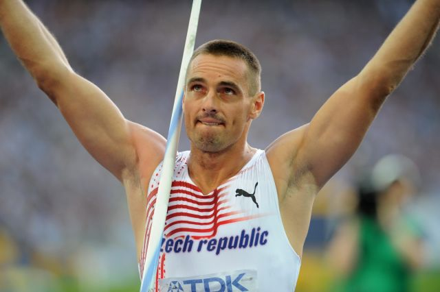

Desetiboj
Disciplíny v něm
- 100m
- 110m př
- 400m
- 1500m
- skok do dálky
- skok do výšky
- skok o tyči
- vrh koulí
- hod diskem
- hod oštěpem
Desetiboj je považován za nejtežší disciplínu v atletice
protože za 2 dny musíte absolvovat všech 10 disciplín.
suplementy pro atlety
atletika-web
kontakt na mě
Roman Šebrle
bývalý Český vícebojař
